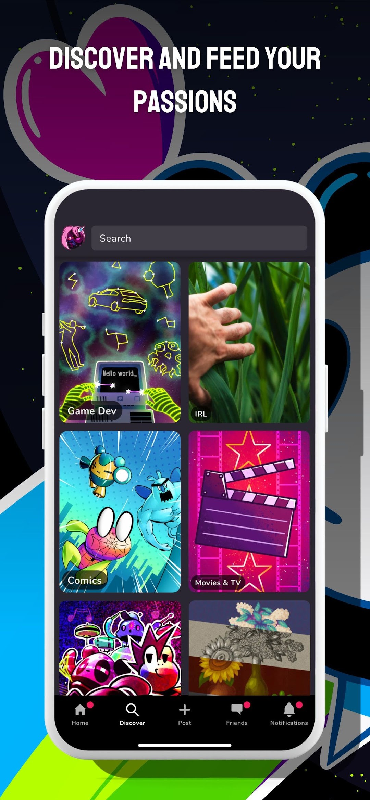
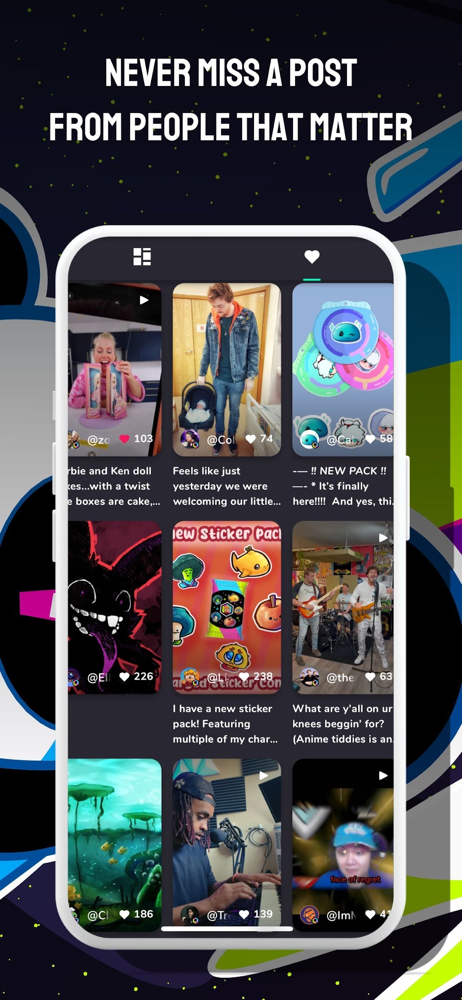

Game Jolt 安卓从 0 到 1：找游戏、玩社区、攒贴纸一条龙
第一次装 Game Jolt？这篇教程带你三步上手——先把应用装好登个记，再挑几个靠谱的独立游戏蹲更新，最后把社区互动攒的贴纸换成像样的头像框。
这篇教程写完的时候，你应该能自己在 Game Jolt 安卓应用里完成安装注册、挑对值得蹲的独立游戏、每天刷两分钟任务攒贴纸换装扮——不踩分级雷区，不浪费社区互动的每一次机会。
准备工作
先确认两件事：
- 系统版本：安卓 5.2 以上就能跑，大部分国产 ROM 没压力；
- 搞清楚应用定位：Game Jolt 的核心定位可以去gamejolt官网看个全貌，它的安卓端不是用来「在手机上玩大游戏」的——它是社区客户端，强项是逛商店、关注创作者、发帖聊天、做任务攒贴纸。真要一键装游戏、自动更新，还是得用电脑客户端。
想清楚这一点，后面就不会疑惑「为什么商店里好多游戏点进去没下载按钮」了。
第一步：安装注册，五分钟搞定
安装包可以从官方下载直接拿，也可以打开应用商店搜 Game Jolt，图标是黑底白字加一颗小心心，别下错了。安装完点开：
- 注册账号：支持邮箱注册，填完邮箱设密码就行——别急着用第三方登录，邮箱注册后面改绑更灵活；
- 初始资料：选一个你喜欢的用户名（后面改要花贴纸，第一次想清楚），挑一张头像，写一句个人简介；
- 验证邮箱：应用会往你填的邮箱发一封确认信，点进去激活。这一步别跳过——不验证邮箱的话，账号丢了找不回来。

登进去之后底栏五个标签：社区、商店、发帖、好友、个人。先别急着乱点，按下面的步骤走一遍基本流程。
第二步：逛商店，挑对值得蹲的独立游戏
商店是 Game Jolt 的核心——这里不卖大厂三 A，主打独立开发者的原创作品。第一次进去容易看花眼，按这个逻辑走：
2.1 先看开发阶段标识
每个游戏卡片上都有三个标签之一：
- Complete：正式完成，可以直接玩；
- WIP（Work In Progress）：还在做，内容可能只有一两个关卡，但会持续更新；
- Canceled：作者说不做了，页面留着但不会再有新内容。
新手最容易踩的坑：看见 WIP 就点进去下载，结果发现根本没构建文件——官方规则允许 WIP 作品不上传可玩版本。想看就看 Complete，想蹲就关注 WIP，Canceled 的直接跳过。
2.2 看懂游戏页的判断信号
点开一个游戏，页面从上到下扫一遍：
- 头图和缩略图：缩略图悬停（网页端）有动效的，开发者用心程度信号+1；
- 标签：#horror、#fnf、#rpg 这些直接告诉我类型对口不对口；
- 内容分级：All Ages / Teen / Mature 三档——未成年用户别碰 Mature，家长可以跟孩子约定只玩前两档；
- 发布历史：看最近三个月有没有更新记录，有 = 作品还活着，没有 = 可能已经停更；
- 评分和评论：翻最近的评论区，看玩家在说什么——差评里有没有「闪退」「操作反人类」这类硬伤。
2.3 关注比下载更重要
找到喜欢的作品，先点关注。Game Jolt 的「关注」机制比「下载」有用得多：
- 关注后，作者每次发更新、上架新内容，社区首页第一时间推给你；
- WIP 作品攒够内容发新版本，关注者优先收到通知；
- 关注的创作者如果开了自己的店铺上新，也会有提醒。

第三步：社区互动，贴纸从这里来
Game Jolt 的「货币」不是充钱买的，是社区互动攒出来的——叫 charged stickers，就是充能贴纸。玩法不难，但要找对每天刷的节奏：
3.1 每日任务刷一遍
个人标签里的任务板块，每天刷新一批简单动作：
- 给三个帖子点赞；
- 评论一个游戏页；
- 分享一个作品到社区；
- 或者纯粹打开应用签个到。
每个任务完成给几张贴纸，积少成多。
3.2 贴纸花在哪
攒够贴纸之后，有两个去处：
- 商店 THE SHOP：创作者上架的贴纸包、头像框、动态背景——这些买了永久归你，装扮自己的资料页和帖子；
- Joltydex 图鉴：收集你关注的创作者上架的所有物品，凑齐一套有成就感——图鉴的收集规则可以去gamejolt文档查个明白。
商店里的东西都是创作者自己做的，花贴纸本质上是给喜欢的开发者应援——和任务攒的充能贴纸（代表收入分成）是两套体系，别混了。
3.3 进阶：内容创作者也能赚钱
如果你自己做游戏、画插画、写教程，Game Jolt 欢迎把作品上架。桌面客户端可以一键把打包好的构建文件上传到你自己的游戏页，商店板块可以把你做的贴纸包、头像框挂上去卖——分成比例平台抽成一部分，剩下的归你。
三个新手最容易翻车的地方
卡点一：WIP 游戏怎么没下载按钮？
解法：官方允许 WIP 不上传可玩构建。先点关注等更新，或者直接去作者帖子里蹲——创作者有时候会在评论区放临时下载链接。真着急想玩完整的，搜 Complete 标识的同类型作品。
卡点二：怎么关评论区？
解法：个人标签 → 设置 → 隐私控制，里面有评论开关、好友申请开关、私信范围开关。未成年用户建议把私信改成「只有好友才能发」，好友申请也收紧到「已有好友的好友」。
卡点三：贴纸攒得慢怎么办？
解法：别只刷签到任务。每天花 20 分钟逛一圈社区首页，给喜欢的帖子点赞评论，参与热门讨论——互动多了系统会额外奖励贴纸。另外关注几个活跃的创作者，他们发帖第一时间抢到「前排」评论，有时候会触发隐藏奖励。
一句话进阶
玩熟了社区和商店之后，试试在 Game Jolt 上发布你自己的第一个独立作品——哪怕是一个用 RPG Maker 做的简单 demo，也能收到玩家的真实反馈，比闭门造车强多了。另外本文整理的 Game Jolt 安卓版安装包存放在GitHub、Gitee、GitCode三个仓库，选哪个方便就从哪个拿。